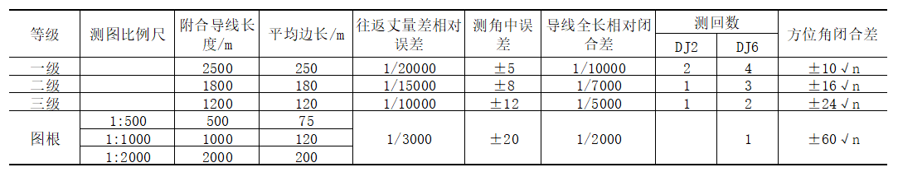
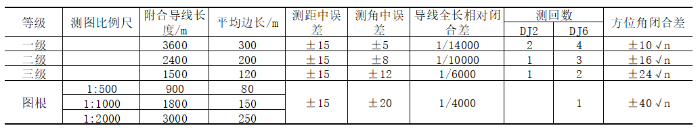
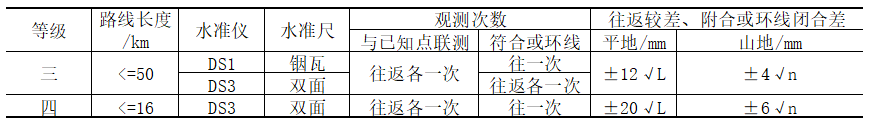
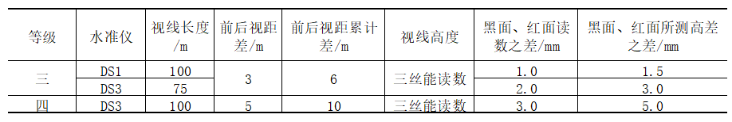

工程测量复习笔记
本文最后更新于：2 个月前
水准测量
仪器
水准尺：成对出现，黑面尺底从0开始，红面尺底一根从4.687m开始，一根从4.787m开始。同一根尺的相同位置红面读书减黑面度读数的差值为4.687m或者为4.787m。这两个数值也成为尺常数。
尺垫：当需要加密点传递高程式使用，尺垫保持加密点的高程在加密点测量的过程中不发生改变。
要点
- 当眼睛在目镜前方上下移动时，发现十字丝的中心刻度同时发生变化，说明物象与十字丝平面不重合。应调节物镜对光螺旋和目镜调教螺旋。
- 计算检核中要包括对后视的所有后视读数求和，减去所有前视读数求和得到读数高差，计算每一段的高差求和与已知的高程差进行核验，确保三者相等。
- 高程改正数应该按照路径的长度加权分配到每一个测量相对高差上。
- 圆水准器轴（$L’L’$）仪器竖轴（VV）水准管轴（LL）视准轴（CC）
误差
- 附和导线的高程测量误差允许值如下表：
| 等级 | 规范名 | 平地 | 山地 |
|---|---|---|---|
| 图根 | 工程测量规范GB50026-2007 | $ \pm 40\sqrt L$ | $\pm 12 \sqrt L$ |
| 图根 | 城市测量规范GJJ/T8-2011 | $ \pm 40\sqrt L$ | $\pm 12 \sqrt L$ |
其中$L$为水准路线长，$km$;
n为测站数
角度测量
仪器
经纬仪：光学经纬仪，电子经纬仪。按照测量精度分类：$DJ_{07}$，$DJ_1$，$DJ_2$，$DJ_6$。角标数字为一测回方向的误差。
要点
- 测回法(适用于两个方向)：
- 盘左精确瞄准第一个目标，水平盘读数稍大于0
- 顺时针旋转瞄准第二个目标，读取水平盘读数，1、2步为上半个撤回
- 倒转望远镜，逆时针旋转望远镜，盘右瞄准第二个目标，记录读数
- 逆时针旋转照准部瞄准第一个目标，记录读数，3、4步为下半测回
- 多测回测量时，按照测绘数n，取$\frac{180°}{n}$为步长变换测回起始角度
- 竖直角测量：
- 竖直角测量前先保持刻度盘在望远镜左侧，记录仰角或俯角读数和初始指标读数（指标差）
- 望远镜翻转180°，此时竖直角度盘在望远镜右侧，记录仰角或俯角和初始指标读数。
- 取左盘右盘的角度计算结果相减除以2即是竖盘指标差，竖盘指标差的误差限制：$DJ_2$不超过$\pm 15″$，$DJ_6$不超过$\pm 25″$
误差
两倍视准轴误差
望远镜翻转180°时盘左盘右的误差，计算公式：
$2c = 盘左读数-(盘右读书\pm 180°)$
同一测回下的误差不能超过，如下表所示：
| 经纬仪型号 | 一测回内$2c$误差 |
|---|---|
| $DJ_2$ | 13″ |
| $DJ_6$ |
水平角限差
上下半测回各计算得到的角度大小的差值，不能超过36″
不同测回测量角度平均数的角度差值不能超过：
- $DJ_2$：9″
- $DJ_6$：24″
半测回归零差
半测回中，盘读数从目标一开始，最后旋转360°至目标一结束。两次目标一的读数差值为半测回归零差。
半测回归零差的范围如下表所示：
| 经纬仪型号 | 半测回归零差 |
|---|---|
| $DJ_2$ | 8″ |
| $DJ_6$ | 18″ |
导线测量
工作要点
- 测量角度：使用测回法测量导线转角时测量左角，若导线为闭合导线，则测量内角。$DJ_6$测量时，盘左盘右差值不超过36″，取平均值。
- 角度平差：将闭合角度差值取负，平均分配到各个测量角上
- 横纵坐标平差：将横纵坐标差值按照边长的比例，平均分配到各个增量点上。
- 坐标方位角：计算点坐标时，$x2=x1+L\tan \varphi$，$y2=y1+L \tan \varphi$。
技术要求
使用钢尺测量导线长度的技术要求如下表所示：

使用光电系统测量导线长度的技术要求如下表所示：

三、四等水准测量的主要技术要求如下表所示：

三、四等水准测量观测的主要技术要求如下表所示：

参考文献
本博客所有文章除特别声明外，均采用 CC BY-SA 4.0 协议 ，转载请注明出处！